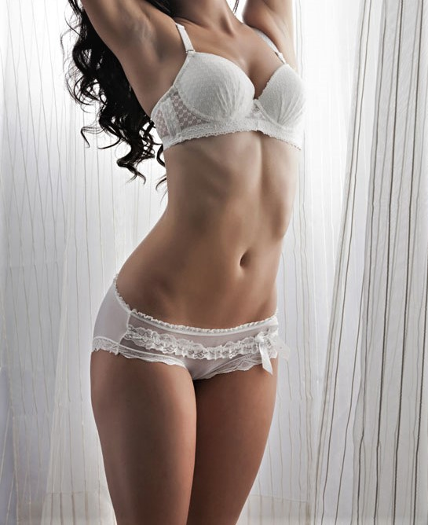
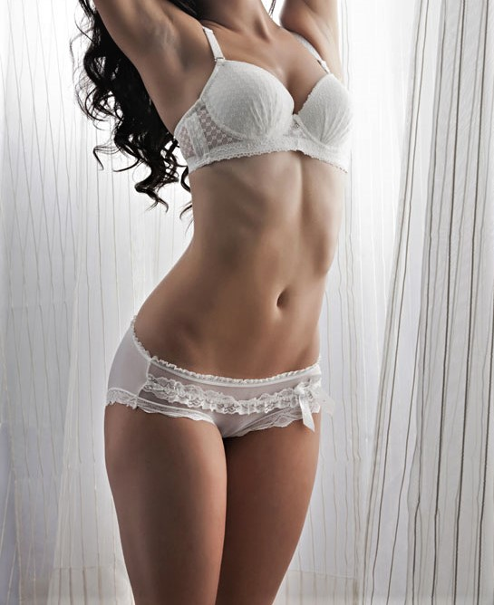
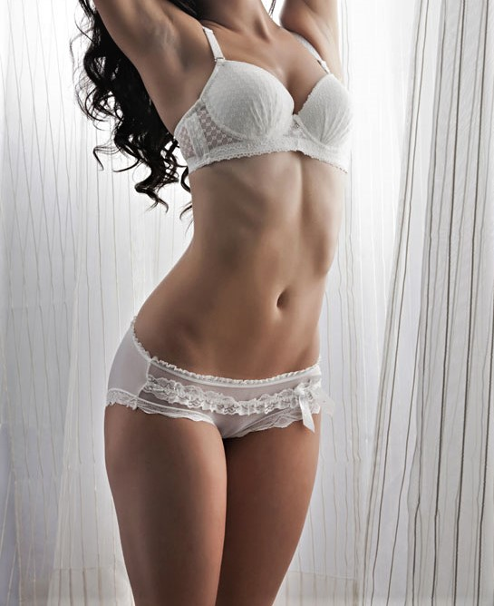

Loops & Knots is a young, trendy fashion brand created to fulfill the desires and dreams of today 'ss female. At L&K wilderness of a female innovates the building of a modern day lifestyle. The Designers at
L&K have collected precious jewels and crafted it to create the desire for women who loves to be in the astonishing world of Trends and Fashion. Phenomenal upsurge in the present day households with high disposable
incomes and exposures to global fashion have further boosted the steep rise in the Global female fashion retail industry. Due to the ongoing fashion revolution and huge cultural shift, the Brands across the globe
are adopting strategies to make Fashion and Lifestyle products an epicenter for their business models and competitive strategies. The Evolution of L&K Label started in Paris in 1979 with the thought that it would
provide world class fashion at the door step of the women who admire fashion in the World. The promoters formulized and collected world class products in every industry and presented it under one brand to make the
best collection for a trendy and complete world.
L&K established the retail business of unique female fashion outlets with the promise to provide world class stores. Specializing in Trendy Garments, Fashion Wears, Night wears, Sports Wears, Lingerie's, Footwear, Accessories, Natural Perfumes, Jewelleries, Technology Based Garments, Slimming Garments, Silicon Products, and various other products which has revolutionize the industry in itself, L&K presently established in United States & European market has planned to sprint ahead by expanding through its franchising business in Asia, Middle East and Africa. With the growing presence of Fashion retail chains and an encouraging mall culture L&K plans a huge expansion and growth for the BRAND.
L&K in its ongoing growt wishes to provide different product range from all across the world under its banner, presently focusing on tribal sequences from all across the world, thus providing a gateway to unique trendy and ethnic fashion industry also.
The land that gave birth to the legendary Orpheus and Spartacus, Bulgaria is a country with a long, tumultuous and fascinating history. It has been invaded, conquered and settled by Greeks, Scythians, Romans,
Byzantines and Turks, all of whom left their indelible marks on the landscape. Bulgaria's medieval 'Golden Age', when the Bulgar Khans ruled over one of the largest empires in Europe, was bright but brief, while
500 years of subsequent, brutal Turkish domination isolated the country from the rest of Europe. More recently, Bulgaria spent four decades as a totalitarian Soviet satellite, again leaving this small Balkan nation
in the shadows as far as the Western world was concerned. It’s no wonder, then, that Bulgarians are so passionate about preserving their history and their culture, which has survived so often against the odds. In
the last years of the 20th century Bulgaria began opening up, and is one of the newest members of the EU.
"Loops and Knots" with their presences in this Balkan territory have preserved the purity and sanctity although with modern thoughts and needs. So crafted and designed all the products served under its brand with originality an authenticity from its age old traditional source.
We the promoters at NICKY EM EOOD, credit the management of "Loops and Knots" to be given this chance to serve the females fashion Apparels and accessories from world in this part of Paradise.
"Loops and Knots" is looking to position itself as one of the leading fashion brands in BULGARIA and other countries in Balkan region by developing networks of more franchise stores under its brand. The company expresses a commitment in providing the highest quality of products, service and customer care, and will draw upon its contacts and knowledge of local market trends and consumer needs to develop complete fashion and trendy world for the females. Women clothing continues to be the most dynamic area of retail in Balkan. Fashion retail sales are growing significantly. The major reason behind this growth is the increasing popularity of branded and premium fashion products over other retail products. Another factor fuelling growth of the industry is the steady increase in spending power within the entire Balkan Peninsula region. "Loops and Knots" plans to enter into 8th consecutive territory in Balkan with PRIDE.
We wish all our partners and associates for their trust and belief in us and promise for our new innovation in the fashion world.
Address :
MRS DIANA ZLATKOVA
NICKY EMM EOOD
KALIMENTAZI NO 33. BLOCK 101
SOFIA BULGARIA.
Phone No. +359-28435350
FAX : +359-29433343
EMAIL : Diana@nickym.com
Croats in the Holy Roman Empire date back to the ninth century. Stories conne te the name "Croat" ( Hrvatc ) with a powerful militar chieftainy in the early Middle Ages and an Alan word for "friend." Regional cultures are considered variations on the larger category of "Croatian," including the cultures of Dalmatia, Istria, Slavonia, and Zagorija. These regions are characterized by differences in geography, traditional economy, food, folkloric tradition, and dialect. Croats share an overall sense of national culture; people often feel strongly about regional identities and local cultural variations, particularly food and language.
“The Balkan” a Paradise and discovered through phases and cruelty of time admiralty. But still the nature blessed everyone here with traditional values and purity of thoughts. Woman here breathe fashion in their everyday life which has been inherited through generation. Females in Balkan are among the prettiest and internationally beautiful so “Loops and Knots” feels proud to serve the Gods unique creations with the best collections in its vicinity. Our presence in this part of the world is increasing every day with great acceptance and love.
“Loops and Knots” with their presences in this Balkan territory have preserved the purity and sanctity although with modern thoughts and needs. So crafted and designed all the products served under its brand with originality and authenticity from its age old traditional source.
We the promoters at Kamakshi CRO Limited, credit the management of “Loops and Knots” to be given this chance to serve the females fashion Apparels and accessories from world in this part of Paradise.
"Loops and Knots with its Master Franchisee believe that it possesses the insights to all areas essential for an effective and profitable business in CROTIA and other Balkan countries, and is committed to offer products and services which conform to establish international standards.
“Innovative promotional ideas will be employed to build on strength to business concepts".
“Loops and Knots” is looking to position itself as one of the leading fashion brands in Serbia and other countries in Balkan region by developing networks of more franchise stores under its brand. The company expresses a commitment in providing the highest quality of products, service and customer care, and will draw upon its contacts and knowledge of local market trends and consumer needs to develop complete fashion and trendy world for the females.
Women clothing continues to be the most dynamic area of retail in Balkan. Fashion retail sales are growing significantly. The major reason behind this growth is the increasing popularity of branded and premium fashion products over other retail products. Another factor fuelling growth of the industry is the steady increase in spending power within the entire Balkan Peninsula region.
“Loops and Knots” plans to enter into 8th consecutive territory in Balkan with PRIDE.
We wish all our partners and associates for their trust and belief in us and promise for our new innovation in the fashion world.
Address:
KAMAKSHI CRO ltd.
TRG Bana Josipa Jelacica
NN 10000 Zagreb
CROATIA
Serbs settled in the Balkan Peninsula in the 6th and 7th cent and accepted Christianity in the 9th cent. Their petty principalities were theoretically under a grand Zhupan, who usually recognized Byzantine suzerainty. Even among European states Serbia was noted for its high economic, social, and cultural level. Serbia 's predominant position in the new kingdom was a major cause for unrest in Croatia and Macedonia in the period between World Wars I and II.
The Federal Republic of Yugoslavia was established in 1992. The state of uncertainty and unrest had been a key power both in Military and Economy and ruled the European continent at one point of time. But being the premier State in the Midst of Balkan always got an eye for its development and growth.
“The Balkan” a Paradise and discovered through phases and cruelty of time. But still the nature blessed everyone here with traditional values and purity of thoughts. Woman here breathe fashion in their everyday life which has been inherited through generation. Females in Balkan are among the prettiest and internationally beautiful so “Loops and Knots” feels proud to serve the Gods unique creations with the best collections in its vicinity. Our presence in this part of the world is increasing every day with great acceptance and love.
“Loops and Knots” with their presences in this Balkan territory have preserved the purity and sanctity although with modern thoughts and needs. So crafted and designed all the products served under its brand with originality and authenticity from its age old traditional source.
We the promoters at Kamakshi SRB Limited, credit the management of “Loops and Knots” to be given this chance to serve the females fashion Apparels and accessories from world in this part of Paradise.
"Loops and Knots with its Master Franchisee believe that it possesses the insights to all areas essential for an effective and profitable business in the Republic of Serbia and other Balkan countries, and is committed to offer products and services which conform to establish international standards.
“Innovative promotional ideas will be employed to build on strength to business concepts. "
“Loops and Knots” is looking to position itself as one of the leading fashion brands in Serbia and other countries in Balkan region by developing networks of more franchise stores under its brand. The company expresses a commitment in providing the highest quality of products, service and customer care, and will draw upon its contacts and knowledge of local market trends and consumer needs to develop complete fashion and trendy world for the females.
Women clothing continues to be the most dynamic area of retail in Balkan. Fashion retail sales are growing significantly. The major reason behind this growth is the increasing popularity of branded and premium fashion products over other retail products. Another factor fuelling growth of the industry is the steady increase in spending power within the entire Balkan Peninsula region.
“Loops and Knots” plans to enter into 8th consecutive territory in Balkan with PRIDE.
We wish all our partners and associates for their trust and belief in us and promise for our new innovation in the fashion world.
Address:
KAMAKSHI SRB ltd.
MAKEDONSKA NN.
11000 BELGRADE
“The Balkan” a Paradise and a virgin territory widely undiscovered. Nature has blessed everyone here with traditional values and purity of thoughts. Woman here breathe fashion in their everyday life which has
been inherited through generation. Females in Balkan are among the prettiest and internationally beautiful so “Loops and Knots” feels proud to serve the Gods unique creations with the best collections in its vicinity.
Our presence in this part of the world is increasing every day with great acceptance and love.
“Loops and Knots” with their presences in Balkan territory have preserved the purity and sanctity although with modern thoughts and needs. So crafted and designed all the products served under its brand with originality and authenticity from its age old traditional source.
We the promoters at Kamakshi industries Limited credit the management of “Loops and Knots” to be have given this chance to serve the females fashion world over here with passion & pride.
"Loops and Knots with its Master Franchisee believe that it possesses the insights to all areas essential for an effective and profitable business in the Republic of Macedonia and other Balkan countries, and is committed to offer products and services which conform to established international standards. " “Innovative promotional ideas will be employed to build on strength to business concepts."
“Loops and Knots” is looking to position itself as one of the leading fashion brands in Macedonia and other countries in Balkan region by developing networks of more franchise stores under its brand. The company expresses a commitment in providing the highest quality of products, service and customer care, and will draw upon its contacts and knowledge of local market trends and consumer needs to develop complete fashion and trendy world for the females.
Women clothing continues to be the most dynamic area of retail in Balkan. Fashion retail sales are growing significantly. The major reason behind this growth is the increasing popularity of branded and premium fashion products over other retail products. Another factor fuelling growth of the industry is the steady increase in spending power within the entire Balkan Peninsula region.
“Loops and Knots” plans to enter into 8th consecutive territory in Balkan with PRIDE.
We wish all our partners and associates for their trust and belief in us and promise for our new innovation in the fashion world.
Adress:
KAMAKSHI INDUSTRIES,
Import-Export Ltd.
Ohrid Unique
Tax No. 4020010510762,
Str: Zeleznicka, No.:16-6000
Ohrid, Republic of Macedonia Offices
Tel/Fax.: MK +389 (0)46257-226
Cell Phone: MK +389 (0)70 232-033
The Master Franchise Partner for Loop & Knots is IBDA CR s.r.o.; founded in 1995 the company has a long tradition celebrating over 15 years in business in the Czech Republic.
The Czech Republic is one of the most beautifully magnificent and historically significant counties in the world.
Generally the women are known as being quite beautiful and globally it has gained a reputation as being a hot bed (source) for leading models.
The country also has firm roots and tradition in fashion, designers and producers.
Women here are stylish and they indulge themselves with good looking clothing and fashion accessories.
Positioned in the heart of Europe it has traditional links to both East and Western Europeans and Russia and most recently it has become an international hub of tourism and cultural exchanges from around the globe.
After the fall of communism Czech’s were anxious for popular brands but lacked the purchasing power they enjoy today. This created a fashion conscious but frugal consumer which is the target of Loops & Knots.
Where better to position the Loops & Knot Master Franchisee in a center the center of cultural Mecca where beauty and inspiration abound and creativity knows no limits?
Prague will be the test site for launching our creative brands and designs, an exposition of beauty, for all the beautiful women of the world.
Our credo is all women have inner and outer beauty, our mission simply to help accentuate it.
